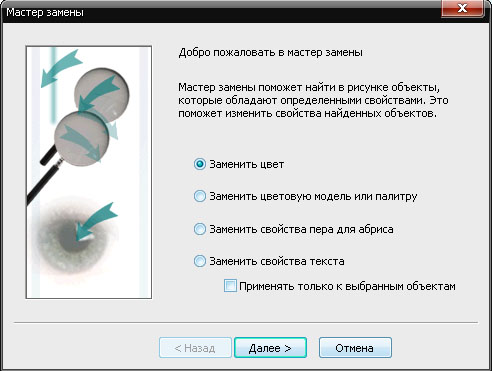

История одного логотипа
Вы молоды и энергичны?
Мечтаете быть дизайнером в полиграфии?
Хотите создавать и творить неповторимое?
Не забывайте, что наравне со своими творениями вам придётся обрабатывать творения других дизайнеров.
Не осудит меня администрация сайта за скрытую, может быть, рекламу.
P.S. До этого в форуме adidas рекламировал, вроде не ругали 8-)
Пример яркий, много что можно расказать для начинающих.
Открываем

Но это не всё, необходимо нажать F4 для отображения всех забытых объектов на полях. Бывает забывают какие-нибудь фотки, а ты думаешь:"чё ж такое? картинка маленькая, а открывалась 1,5 часа?

И это не всё!
Необходимо проверить на наличие прозрачных объектов с нулевым абрисом.
Для этого необходимо перейти в упрощённый каркас
P.S. Я, обычно, копирую объект и вставляю в новый документ с моим привычным рабочим пространством (напраляющие, абрисы и т.д.)
Смотрим свойства документа (используем правую кнопку мыши)

Здесь мы можем поверхностно оценить наличие эффектов (тени, прозрачности) и разницы в цветовых моделях (RGB, CMYK)

Привести всё к одной цветовой модели можно вручную или с помощью Замены


Котрольный просмотр Свойств документа. Цветовая модель одна!
P.S. Использование Замены бывает полезно при использовании старых клипартов или сконвертированных из eps.


Повторюсь, панель Свойства документа позволяет поверхностно оцень ситуацию.
Диспетчер объектов — в помощь!
К сожалению, и Диспетчер объектов не показывает всех камней.
Мы видим состав цвета только сплошных заливок, а фонтанные — всё ещё тайна.
Анализируя детально, видим, что с фонтанными заливка та же история.
Ни в коем случае не обвиняю дизайнера логотипа.
Наверняка ему ставили задачу сделать большой логотип. Он даже и не подозревал, что этот логотип решат печатать на газетке, в макете 1/16.... короче размер 20х10 мм. Знающие понимают, что произойдёт, когда напечатать визуально чёрный — 65-55-55-95.
В этом случае повезло, что цвет "чёрный" был одинаковый в фонтанных заливках и в сплошных. Опять обращаемся к Замене!

Всё равно не спокойно. А вдруг дизайнер где-то нажал не туда и получилось не 65-55-55-95,а 65-55-55-96. Т.е. в этом случае цвет остался прежним.
Необходимо набратся терпения и перебрать логотип вручную.
Для этого ставим смещение чуть больше ширины логотипа
И каждый подозрительный элемент проверяем, сдвигая его после проверки влево, вправо, вверх, вниз — куда удобней. Логотип должен собраться в другом месте.
Для контроля переходим в упрощённый каркас, смотрим забытые нами элементы (в основном белого цвета), или обнаруживаем производственный мусор, незамеченный предыдущим дизайнером.
Ну вот логотип готов к печати. И не будет неожиданностей!
Вы всё ещё не передумали быть дизайнерами?
Таких логотипов в одном макете может быть несколько!
Шучу! Сам постоянно попадаю.
Один раз неусмотрел текст 400% — 2,5 штуки из зарплаты вычли за плёнки.
Всем творческих успехов!
Я тогда тоже порекламирую :D
Что бы не тратить время на поиски "паразитных" объектов, например RGB, через менеджер объектов, информацию о документе и поиск/замену, лучше пользоваться макросами. На анимационном примере ниже показано, как легко и быстро найти и "устранить" проблему.
Для просмотра, откройте изображение в новом окне!
Sancho, я давно оценил CdrPreflight.
Вот ты мне скажи: Почему производители корела не упрощают решение задачи пользователям? Всё это напоминает кашу из топора. Купил топор, потом где-то надо взять крупу, потом масло....
P.S. Вспоминаю время, когда типография требовала макеты без цветовых стилей, а присланные макеты ими кишили. И удаляя их вручную на ум приходили только плохие слова.
Думаю, на данном этапе урок имеет место быть.
sergey, сам то понял что спросил? Можно с аналогичным успехом рассуждать "Ну я же купил винду, почему она не пляшет, не танцует и пиво не доливает?" Компания предлагает продукт с тем набором функций который они посчитали нужным сделать, не нравится — не используй!
Так ведь других нет?! Вот никаких и не читайте!
divingdog, кого нет? Векторных редакторов что ли? Иллюстратор, Ксара, Инскейп, ещё какие то были. Выбор есть всегда! Только дело не в этом, а в том что не надо очередные сопли разводить о несчастной жизни бедных пользователей.
Ксара, Инскейп, ещё какие то были. Сие не редакторы.
Я может не такой ас в кореле, как вы, но скажите зачем так мучится, когда можно сразу ко всей странице применить макрос sToolsColor.ToCMIK и все сразу переведется в СМИК или я не права?
lourisya, в этой истории я пытался рассказать, как я анализирую присланные документы. Есть несколько вариантов привести составные макета к одной цветовой модели. Если вы почитаете внимательней, я пытался (в основном) предостеречь от визуально чёрного цвета, который на самом деле составной, и не знаю макрос sToolsColor.ToCMIK (CMYK) решит это.
З.Ы. Я тоже не ас, постоянно учусь и узнаю новое.
Страницы